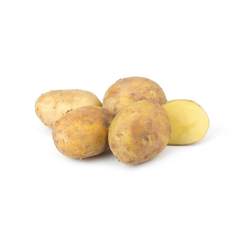
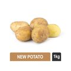
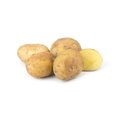

Delivery in 8 minutes
Vipul Tech Square, Golf Course Rd, DLF Phase 5, Sector 43, Gurugram, Haryana 122009, India
Login
r
My Cart




Product Details
Nutrient Value & Benefits
Contains Vitamin C, Potassium, starch,.Potato helps in reducing inflammation, promote digestion and are good for skin.
Storage Tips
Store the potatoes unwashed unless they are needed. Keep in wire baskets at room temperature.
Storage Temperature (degC)
7-10
Unit
1 kg
Ingredients
Potatoes
Shelf Life
3 days
Manufacturer Details
Hands On Trades Pvt. Ltd,Mushtil No 29, Kila No 25, GOPALPUR, GOPALPUR, Gurgaon, Haryana, 122001
Marketed By
Hands On Trades Pvt. Ltd.,301-B, Hemkunt Chambers 89, Nehru Place, New Delhi-110019
FSSAI License
13621034000190,10019047001269,Udyam-TS-02-0009240,13617034000317,11219332000914,11221303000189,12421023001533,21221179002239,21219187001929,11221331000389,21213013000209,21219014001027,11219332000914,10020043003204,2122001000239,21221113001496,21221141000035,11220302000966,13319002000537,22219069000218,22220066000248,30210930108860945,10821999000396,20820005003947,13321009000162,13321011000779,13318002000528,13319002000537
Country of Origin
India
Customer Care Details
Customer Care No. 1-800-208-2400 & 1-800-208-8888
Customer Care Mail Id: customercare@handsontrade.com & info@blinkit.com
Customer Care Mail Id: customercare@handsontrade.com & info@blinkit.com
Expiry Date
Please refer to the packaging of the product for expiry date.
Seller
90MINUTES RETAIL PRIVATE LIMITED
Seller FSSAI
10019064001734
Description
New Potatoes: If you are looking for soft, slightly sweet but creamy-textured potatoes. These are a special variant early harvest of potatoes (not to be confused with our regular Potato) and are easily distinguishable with their thin/ tender skin which makes them easy-to-peel off even it can be used without peeling. These freshly picked potatoes are a great choice for roasting or boiling. They give essential nutrients to your body along with high dietary fibre and carbohydrates. Combined with great taste and nutrients this vegetable is the most popular and loved amongst households.
Disclaimer
Every effort is made to maintain the accuracy of all information. However, actual product packaging and materials may contain more and/or different information. It is recommended not to solely rely on the information presented.
ADD
Why shop from blinkit?
Superfast Delivery
Get your order delivered to your doorstep at the earliest from dark stores near you.
Best Prices & Offers
Best price destination with offers directly from the manufacturers.
Wide Assortment
Choose from 5000+ products across food, personal care, household & other categories.
© Blink Commerce Private Limited (formerly known as Grofers India Private Limited), 2016-2023
Download App
“Blinkit” is owned & managed by "Blink Commerce Private Limited" (formerly known as Grofers India Private Limited) and is not related, linked or interconnected in whatsoever manner or nature, to “GROFFR.COM” which is a real estate services business operated by “Redstone Consultancy Services Private Limited”.